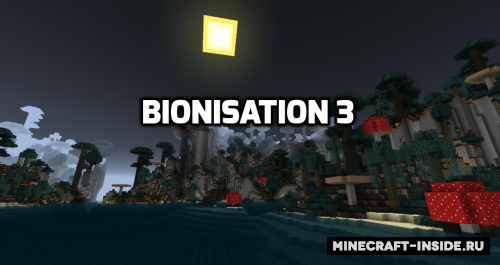
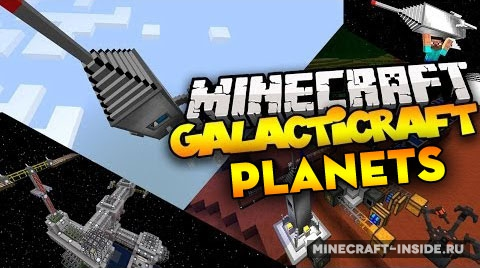
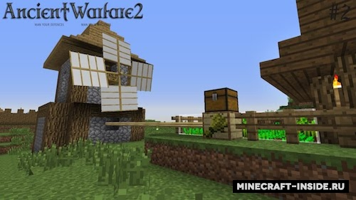
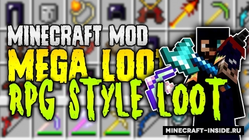
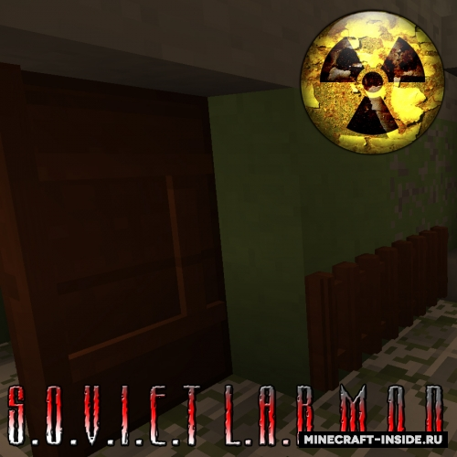
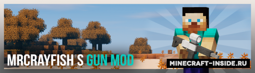
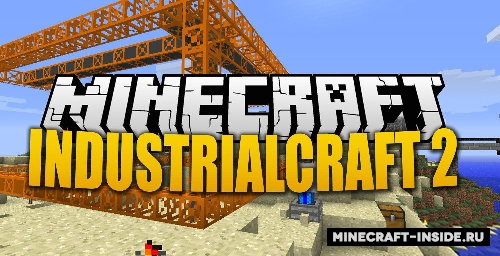

Третья часть уникального мода, с которым в майнкрафт появятся различные вирусы и бактерии. Опасность будет подстерегать вас в самых разных местах, и для борьбы с ней вам придется создавать вакцины и поддерживать свой иммунитет.

Наверное самый популярный мод на ракеты и космос для майнкрафт, с его нововведениями можно будет построить многоуровневую ракету и отправиться в путешествие на другие планеты, изучать их, строить космические станции.

Неплохой мод, который существенно разнообразит майнкрафт, в игре будут генерироваться новые структуры, появится возможность создавать боевых и рабочих NPC и автоматизировать привычные задачи с помощью механизмов

Своеобразная эволюция мода Weapon Case Loot, после установки которого вы будете находить сундуки с уникальными видами оружия разной редкости. Такие предметы будут различаться внешним видом и характеристиками.

Модификация от русскоязычного автора, которая добавит в игру коллекцию декоративных блоков, позволяющих вам создавать аутентичные заброшенные советские лаборатории.

Новый мод на оружие с необычным механикой, вместо того, чтобы добавлять каждое оружие по отдельности, он добавит универсальный 'ствол', который можно улучшать различными модулями.
